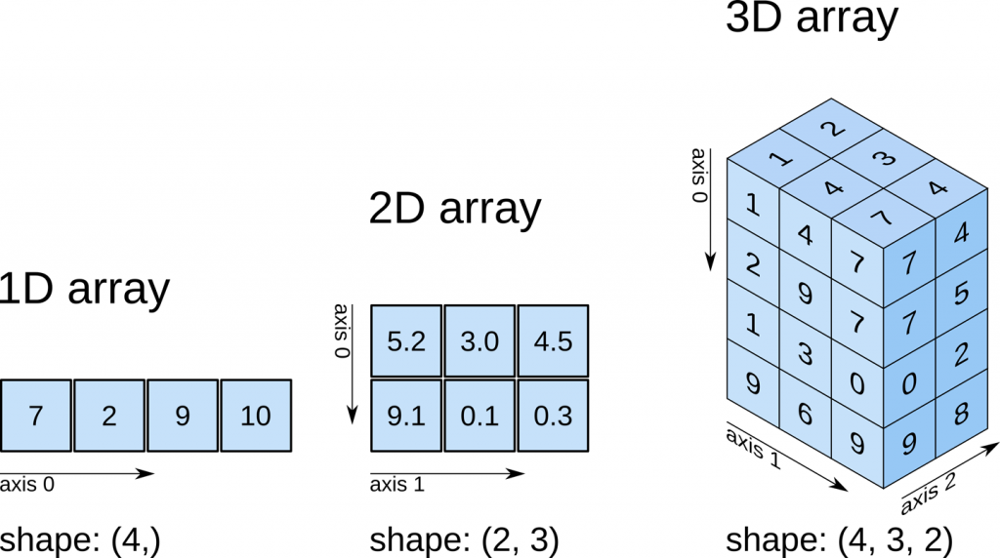

import numpy as npNumerical computing with NumPy
As a statistician, you frequently need to manipulate series of numerical values and perform various mathematical operations, from the most common (mean, variance, etc.) to the more complex. As we did in previous tutorials, you can use Python’s fundamental objects, particularly lists, to perform such operations. However, in practice, you will prefer to use the reference library for scientific computing, NumPy, which provides both objects (arrays) and functions that greatly simplify performing all your calculations in Python efficiently.
NumPy
We start by importing the NumPy library. As explained in a previous tutorial, it is common practice to assign it the alias np.
Why use NumPy?
Rather than presenting the advantages of NumPy abstractly, let’s illustrate them through a simple example: element-wise multiplication of two vectors.
We generate two vectors containing integers from \(0\) to \(99999\), which we multiply element-wise. We first perform this using Python lists (function mult_list), then using NumPy (function mult_np), and compare the performance of both methods.
def mult_list(n):
a = range(n)
b = range(n)
c = []
for i in range(len(a)):
mult = a[i] * b[i]
c.append(mult)
return c
def mult_np(n):
a_np = np.arange(n)
b_np = np.arange(n)
c_np = a_np * b_np
return c_npn = 100000# Verify consistency on the first 10 elements
print(mult_list(n)[:10])
print(mult_np(n)[:10])[0, 1, 4, 9, 16, 25, 36, 49, 64, 81]
[ 0 1 4 9 16 25 36 49 64 81]%%timeit -n10
mult_list(n) # Performance of the list method17 ms ± 212 μs per loop (mean ± std. dev. of 7 runs, 10 loops each)%%timeit -n10
mult_np(n) # Performance of the NumPy method116 μs ± 12.8 μs per loop (mean ± std. dev. of 7 runs, 10 loops each)This example illustrates the main advantages of NumPy for scientific computing:
- Calculations are vectorized: multiplying two arrays naturally performs element-wise multiplication, unlike lists which do not support this operation. People familiar with
Rwill recognize this as a familiar and very convenient property. - As a result of vectorization, the syntax is lighter and clearer: you directly see the operation being performed, reducing the risk of error.
- Calculations are automatically optimized by
NumPy(through calls to pre-compiledCcode), significantly reducing the time taken for mathematical operations (by a factor of 10 in our example).
NumPy arrays
Definition
The entire NumPy library is based on a fundamental object: the array. An array is an object that contains a sequence of data and has two main characteristics:
- The data contained in an array must be of homogeneous type, whereas a single list can contain objects of different natures.
- An array has a fixed size at creation, whereas a list can dynamically grow (e.g., by adding elements via the
appendmethod).
These two constraints largely enable the performance gains and readable syntax that NumPy offers.
Creation
There are different ways to create an array. The most standard way is to convert a list into an array using the array function from NumPy.
l = [1, 2, 3]
a = np.array(l)
print(a)[1 2 3]At first glance, the print function returns a representation identical to that of a list. Let’s check the type of our object.
type(a)numpy.ndarrayThe object is of type ndarray, which is the standard type corresponding to a NumPy array.
We have seen that an array has the property of containing homogeneous data types; in this case, integers. We can check the type of the data contained using the dtype attribute of an array.
a.dtypedtype('int64')Although NumPy is primarily a library for numerical computation, it is entirely possible to define arrays containing strings.
b = np.array(['1', 'tiger'])
b.dtypedtype('<U5')The default dtype of arrays containing strings is a bit peculiar, but this doesn’t matter in practice. Just remember its form.
Finally, an important question: what happens if you try to define an array containing objects of heterogeneous types?
c = np.array([1, 2, '3'])
print(c)
print(c.dtype)['1' '2' '3']
<U21Answer: all objects are converted to strings by default.
Dimension
Arrays correspond to data tables, meaning they can be uni- or multi-dimensional. A 1-dimensional array looks like a vector (or list), a 2-dimensional array looks like a matrix, and so on.
You can display the number of dimensions of an array using the ndim attribute.
c = np.array([1, 2, '3'])
c.ndim1Just as we created a 1-dimensional array from a simple list, we can create a multi-dimensional array from a list of lists.
d = np.array([[1, 2, 3], [4, 5, 6]])
print(d)[[1 2 3]
[4 5 6]]We converted a list containing 2 sub-lists with 3 elements each, resulting in a 2-dimensional array. Note that calling print displays a matrix with two rows and three columns.
d.ndim2We indeed have a 2-dimensional array. However, in practice, when handling multidimensional arrays, we also want to know the size of each dimension. In 2 dimensions, it’s the number of rows and columns. For this, we use the shape method, which returns a tuple containing the sizes of the different dimensions.
d.shape(2, 3)The first number gives the number of rows, the second the number of columns. We will revisit the order of dimensions later through the notion of axis.
Indexing
You access the elements of a 1-dimensional array in the same way as those of a list.
a = np.array([1, 2, 3, 4, 5, 6])
print(a)
print()
print(a[1])
print()
print(a[2:5])
print()
print(a[-2])[1 2 3 4 5 6]
2
[3 4 5]
5For a multidimensional array, you need to specify the desired elements for each dimension of the array, separated by commas.
b = np.array([[1, 2, 3, 4], [5, 6, 7, 8], [9, 10, 11, 12]])
print(b)
print()
print(b[1, 3])
print()
print(b[1:3, 1:3])[[ 1 2 3 4]
[ 5 6 7 8]
[ 9 10 11 12]]
8
[[ 6 7]
[10 11]]To access a complete row, you can use : for the column dimension to specify “all columns”. Conversely, to retrieve a complete column.
print(b[1,:])
print()
print(b[:,2])[5 6 7 8]
[ 3 7 11]Modifying elements
Array elements can be modified. To do this, combine the indexing syntax seen earlier with the assignment operator =.
b = np.array([[1, 2, 3, 4], [5, 6, 7, 8], [9, 10, 11, 12]])
b[1, 1] = 18
print(b)[[ 1 2 3 4]
[ 5 18 7 8]
[ 9 10 11 12]]You can also modify series of numbers, or even complete rows/columns, as long as you assign an element of the same size.
b = np.array([[1, 2, 3, 4], [5, 6, 7, 8], [9, 10, 11, 12]])
b[:, 2] = [-1, -1, -1]
barray([[ 1, 2, -1, 4],
[ 5, 6, -1, 8],
[ 9, 10, -1, 12]])Unlike lists, you generally do not add or remove elements from an array. This is because, as stated earlier, an array’s size is fixed at creation.
If you want to grow an array, you typically do so by starting with a list — which can grow — and then converting it to an array.
If you want to delete elements from an array, you can use the indexing syntax studied in the previous section to retrieve the sub-array of interest and assign it to a new variable.
Boolean masks
A significant advantage of NumPy arrays over lists is that they support boolean masks, allowing you to select elements of an array by passing an array of the same size containing booleans.
a = np.array([1, 2, 3])
a[[True, True, False]]array([1, 2])This property opens many possibilities since it can be combined with the vectorization property of arrays. It becomes very easy to select elements according to conditions, even for multidimensional arrays.
b = np.array([[1, 2, 3, 4], [5, 6, 7, 8], [9, 10, 11, 12]])
cond = (b > 6) & (b != 10)
print(cond)
print()
print(b[cond])[[False False False False]
[False False True True]
[ True False True True]]
[ 7 8 9 11 12]And you can, of course, exploit this mechanism to modify elements according to a condition.
b[cond] = -1
print(b)[[ 1 2 3 4]
[ 5 6 -1 -1]
[-1 10 -1 -1]]This last example also illustrates an important property in NumPy called broadcasting: when replacing multiple elements of an array with a single-size element (not an array of the same size), all elements are replaced by this value.
Mathematical operations
Arithmetic on arrays
At the beginning of this tutorial, we saw that multiplying two arrays using
the * operator performs element-wise multiplication of the two arrays in a vectorized manner. Basic operations (+, -, *, and /) apply similarly to multidimensional arrays.
a = np.array([[1, 2, 2], [2, 2, 1]])
b = np.array([[3, 3, 1], [1, 3, 3]])
a * barray([[3, 6, 2],
[2, 6, 3]])We again see the broadcasting property discussed in the previous section: when you perform an operation between an array and a single-size number, the operation is applied to each term in the array.
a * 4array([[4, 8, 8],
[8, 8, 4]])Linear algebra
NumPy allows you to perform simple and efficient linear algebra operations on arrays. The complete list of available functions is presented in the official documentation (in English).
For example, the @ operator performs matrix multiplication (and no longer element-wise multiplication like *).
a = np.array([[1, 2, 3], [3, 2, 1]])
b = np.array([[2, 3], [1, 3], [3, 1]])
a @ barray([[13, 12],
[11, 16]])Mathematical functions
NumPy offers a plethora of mathematical and statistical functions, such as sum, mean, min, round, log, etc. Applying them to one-dimensional objects poses no particular problem.
print(np.log(12))
print()
print(np.min([1, 2, 3]))
print()
print(np.mean([1, 2, 3]))2.4849066497880004
1
2.0However, in the multidimensional case, their use becomes a bit more subtle because you may want to aggregate along different dimensions. If nothing is specified, the aggregation is done over all the array elements.
a = np.array([[1, 2, 2], [2, 2, 1]])
np.sum(a)np.int64(10)But how do you sum by rows? Or by columns? This is where a crucial and somewhat complex element of NumPy functions comes in: the axis parameter, which specifies the dimension along which to perform the operation.
When not specified, as in the previous example, it defaults to None.
a = np.array([[1, 2, 2], [2, 2, 1]])
np.sum(a, axis=None) # same as np.sum(a)np.int64(10)The following figure helps visualize how axes work with NumPy, to specify the expected direction of aggregation correctly.

Thus, if you want to compute the sum of each column, for example, you need to aggregate along axis \(0\).
a = np.array([[1, 2, 2], [2, 2, 1]])
np.sum(a, axis=0)array([3, 4, 3])Conversely, to get the sums of each row.
np.sum(a, axis=1)array([5, 5])Finally, note that mathematical functions that perform aggregation are generally also available as methods of an array. They work the same way, except that they do not take the array as an argument since they are already “attached” to it.
a.sum(axis=1)array([5, 5])Conclusion
NumPy is the quasi-standard library for scientific computing in Python. It is preferred whenever you want to perform operations on numerical data, especially when dealing with vectorized operations and/or multidimensional objects like matrices.
The possibilities offered by NumPy are vast, and we have only seen a glimpse. The official documentation presents all these possibilities. This cheat sheet can also be useful in case of forgetfulness. We will also see additional functions through the end-of-chapter exercises.
Exercises
Questions de compréhension
- 1/ What are the main advantages of
NumPy? - 2/ What are the two main characteristics of a
NumPyarray? - 3/ What happens if you try to define an array containing objects of heterogeneous types?
- 4/ What is the primary method for creating an array?
- 5/ What information does the
shapeattribute of an array contain? - 6/ Can you add an element to an array? Remove an element?
- 7/ What is a boolean mask, and what is it used for?
- 8/ What is the broadcasting property?
- 9/ What is the purpose of the
axisparameter inNumPy’s mathematical functions?
Show the solution
- 1/ Calculations are vectorized, which greatly simplifies syntax and reduces the risk of errors. Additionally, calculations are automatically optimized by
NumPy, significantly increasing performance. - 2/ The data contained in an array must be of homogeneous type. An array has a fixed size at creation.
- 3/ All objects are interpreted as strings.
- 4/ Create a list and then convert it to an array using the
np.arrayfunction. - 5/ The
shapeattribute of an array returns a tuple that contains the size of each dimension, and thus also the number of dimensions. - 6/ There are functions that perform these operations, but they are not commonly used in practice since an array has a fixed size at creation.
- 7/ A boolean mask is an array of boolean values (
TrueandFalse) used to select elements from another array. It is particularly useful for selecting elements based on a condition (test). - 8/ When you perform an operation between an array and a single-size value (typically, an integer or a real number), the operation is applied to each element of the array.
- 9/ The
axisparameter specifies the dimension along which you want to perform an aggregation (math, stat functions, etc.).
Simple manipulations of a DataFrame’s data
A vector containing integers between 10 and 20 is defined in the following cell. Using NumPy array indexing:
- Select the elements at positions 1, 3, and 4
- Select all elements except the first one
- Select all elements except the first and the last one
- Select the first 3 elements
- Select the last 5 elements
- Select all even elements
- Select all elements in reverse order (NB: the
np.flipfunction can achieve the same result)
X = np.arange(10, 21)
print(X)[10 11 12 13 14 15 16 17 18 19 20]# Test your answer in this cellShow the solution
X = np.arange(10, 21)
print(X[[1, 3, 4]])
print(X[1:])
print(X[1:-1])
print(X[:3])
print(X[-5:])
print(X[::2])
print(X[::-1])[11 13 14]
[11 12 13 14 15 16 17 18 19 20]
[11 12 13 14 15 16 17 18 19]
[10 11 12]
[16 17 18 19 20]
[10 12 14 16 18 20]
[20 19 18 17 16 15 14 13 12 11 10]Selecting elements in a matrix
A 5x5 matrix containing integers from 0 to 24 is defined in the following cell. Using NumPy array indexing:
- Select the value \(19\)
- Select the 2nd row
- Select the 4th column
- Select the central 3x3 submatrix
- Select the diagonal elements (NB: the
np.diagfunction can perform the same operation much more easily)
Y = np.arange(0, 25).reshape((5, 5))
print(Y)[[ 0 1 2 3 4]
[ 5 6 7 8 9]
[10 11 12 13 14]
[15 16 17 18 19]
[20 21 22 23 24]]# Test your answer in this cellShow the solution
Y = np.arange(0, 25).reshape((5, 5))
print(Y[3, 4])
print(Y[1, :])
print(Y[:, 3])
print(Y[1:4, 1:4])
print(Y[np.arange(0, 5), np.arange(0, 5)])19
[5 6 7 8 9]
[ 3 8 13 18 23]
[[ 6 7 8]
[11 12 13]
[16 17 18]]
[ 0 6 12 18 24]Some calculations
Two 3x3 square matrices are defined as NumPy arrays in the following cell. Based on these matrices, perform the following mathematical operations:
- Multiply all elements of
Xby 3 - Divide the elements of
Yby those ofX - Apply the
logfunction to all elements ofY - Square all elements of
X - Perform matrix multiplication of
XandY - Transpose the
Ymatrix
NB: You can find the necessary functions in the documentation or using a search engine.
X = np.array([[1,2,3],
[4,5,6],
[7,8,9]])
Y = np.array([[10,11,12],
[13,14,15],
[16,17,18]])# Test your answer in this cellShow the solution
X = np.array([[1,2,3],
[4,5,6],
[7,8,9]])
Y = np.array([[10,11,12],
[13,14,15],
[16,17,18]])
print(3 * X)
print()
print(Y / X)
print()
print(np.log(Y
))
print()
print(np.square(X))
print()
print(Y @ X)
print()
print(Y.T)[[ 3 6 9]
[12 15 18]
[21 24 27]]
[[10. 5.5 4. ]
[ 3.25 2.8 2.5 ]
[ 2.28571429 2.125 2. ]]
[[2.30258509 2.39789527 2.48490665]
[2.56494936 2.63905733 2.7080502 ]
[2.77258872 2.83321334 2.89037176]]
[[ 1 4 9]
[16 25 36]
[49 64 81]]
[[138 171 204]
[174 216 258]
[210 261 312]]
[[10 13 16]
[11 14 17]
[12 15 18]]Initializing arrays of various types
In the tutorial, we saw that the standard method to create a NumPy array is to initialize a list and then convert it to an array. You can also use native NumPy functions that create arrays of a given size containing basic values (e.g., near-empty values, zeros, ones, a user-specified value, etc.).
For example, to create a 3x2 matrix containing zeros, the syntax is:
np.zeros((3, 2))array([[0., 0.],
[0., 0.],
[0., 0.]])Referring to the documentation of these functions, generate:
- A vector (1-dimensional array) containing the value \(1\) repeated 18 times (using the
np.onesfunction) - A 3-dimensional array with sizes 2, 3, and 5 respectively, containing only zeros (using the
np.zerosfunction) - A matrix (2-dimensional array) with 4 rows and 3 columns, containing only the value 5 (using the
np.fullfunction) - A 5x5 identity matrix, i.e., a matrix with 5 rows and 5 columns containing \(1\) on its diagonal and \(0\) elsewhere (using the
np.eyefunction) - A vector containing integers from \(0\) to \(99\) inclusive (using the
np.arangefunction) - A vector containing even integers from \(0\) to \(99\) inclusive (using the
np.arangefunction) - A vector containing 5 values evenly spaced between \(2\) and \(3\) inclusive (using the
np.linspacefunction)
# Test your answer in this cellShow the solution
a = np.ones((18,))
print(a)
print()
b = np.zeros((2, 3, 5))
print(b)
print()
c = np.full((4, 3), fill_value=5)
print(c)
print()
d = np.eye(5)
print(d)
print()
e = np.arange(0, 100)
print(e)
print()
x = np.arange(0, 100, step=2)
print(x)
print()
y = np.linspace(2.0, 3.0, num=5)
print(y)
print()[1. 1. 1. 1. 1. 1. 1. 1. 1. 1. 1. 1. 1. 1. 1. 1. 1. 1.]
[[[0. 0. 0. 0. 0.]
[0. 0. 0. 0. 0.]
[0. 0. 0. 0. 0.]]
[[0. 0. 0. 0. 0.]
[0. 0. 0. 0. 0.]
[0. 0. 0. 0. 0.]]]
[[5 5 5]
[5 5 5]
[5 5 5]
[5 5 5]]
[[1. 0. 0. 0. 0.]
[0. 1. 0. 0. 0.]
[0. 0. 1. 0. 0.]
[0. 0. 0. 1. 0.]
[0. 0. 0. 0. 1.]]
[ 0 1 2 3 4 5 6 7 8 9 10 11 12 13 14 15 16 17 18 19 20 21 22 23
24 25 26 27 28 29 30 31 32 33 34 35 36 37 38 39 40 41 42 43 44 45 46 47
48 49 50 51 52 53 54 55 56 57 58 59 60 61 62 63 64 65 66 67 68 69 70 71
72 73 74 75 76 77 78 79 80 81 82 83 84 85 86 87 88 89 90 91 92 93 94 95
96 97 98 99]
[ 0 2 4 6 8 10 12 14 16 18 20 22 24 26 28 30 32 34 36 38 40 42 44 46
48 50 52 54 56 58 60 62 64 66 68 70 72 74 76 78 80 82 84 86 88 90 92 94
96 98]
[2. 2.25 2.5 2.75 3. ]
Drawing a vector from a normal distribution
Referring to the documentation of NumPy’s random number generation functions, generate a vector X of size 10000 containing numbers drawn from a normal distribution with mean 0 and variance 2.
Then verify using NumPy’s mathematical functions that the mean and variance of your sample are consistent with the expected values.
Hint: Pay attention to how the variance is specified in the NumPy function for generating a normal distribution.
# Test your answer in this cellShow the solution
X = np.random.normal(0, np.sqrt(2), 10000)
print(np.mean(X), np.var(X))-0.013591804461258227 1.988559819154998Drawing a matrix from a uniform distribution
Referring to the documentation of NumPy’s random number generation functions, generate a matrix U of size 1000 by 1000 containing numbers drawn from a uniform distribution in the interval [-1, 1].
Using the np.all function and a boolean test, verify that all numbers in U are indeed between -1 and 1.
# Test your answer in this cellShow the solution
N = 1000
U = np.random.uniform(-1, 1, size=(N, N))
np.all((U >= -1) & (U <= 1))np.True_Binarizing a matrix of numbers
Sometimes, you may need to binarize a numerical matrix, meaning to set a threshold beyond which numerical values are set to 1 and to 0 below. NumPy offers several methods for performing such an operation; we will see two.
In the following cell, a 6x6 matrix X is generated, containing integers randomly chosen between 0 and 49. You need to binarize this matrix in two different ways without overwriting it (i.e., the binary matrix should be assigned to a different variable than X, and X should not be modified):
- First method: using the
np.zerosfunction and boolean masks - Second method: using the
np.wherefunction (see doc)
X = np.random.randint(0, 50, size=(6, 6))# Test your answer in this cellShow the solution
X = np.random.randint(0, 50, size=(6, 6))
# First possibility: using boolean masks
A = np.zeros((6, 6))
A[X > 25] = 1
# Second possibility: using the np.where function
B = np.where(X > 25, 1, 0)
print(X)
print()
print(A)
print()
print(B)[[34 20 28 33 27 4]
[ 4 42 13 18 42 9]
[27 29 20 14 21 24]
[31 31 6 32 38 11]
[48 29 40 34 10 45]
[41 40 30 3 4 5]]
[[1. 0. 1. 1. 1. 0.]
[0. 1. 0. 0. 1. 0.]
[1. 1. 0. 0. 0. 0.]
[1. 1. 0. 1. 1. 0.]
[1. 1. 1. 1. 0. 1.]
[1. 1. 1. 0. 0. 0.]]
[[1 0 1 1 1 0]
[0 1 0 0 1 0]
[1 1 0 0 0 0]
[1 1 0 1 1 0]
[1 1 1 1 0 1]
[1 1 1 0 0 0]]Battleship
The objective of this exercise is to program a very basic battleship game using only NumPy objects and functions.
A 5x5 grid is defined in the following cell as an array, with \(1\) values representing the presence of a ship. You need to program a shoot function that:
- Takes as input an \(x\) coordinate (row index) and a \(y\) coordinate (column index)
- Tests if at least one \(1\) value is present in the grid:
- If yes:
- If there is a ship at the address (x, y), replace the \(1\) value with \(2\) and
print“Hit!” - Otherwise,
print“Missed!”
- If there is a ship at the address (x, y), replace the \(1\) value with \(2\) and
- If no:
print“Game over!”
- If yes:
Then perform some tests to ensure your function works as expected.
X = np.array([[1, 1, 1, 0, 0], [0, 0, 0, 0, 1], [1, 0, 0, 0, 1],
[1, 0, 0, 0, 0], [0, 1, 1, 1, 1]])
print(X)[[1 1 1 0 0]
[0 0 0 0 1]
[1 0 0 0 1]
[1 0 0 0 0]
[0 1 1 1 1]]# Test your answer in this cellShow the solution
X = np.array([[1, 1, 1, 0, 0], [0, 0, 0, 0, 1], [1, 0, 0, 0, 1],
[1, 0, 0, 0, 0], [0, 1, 1, 1, 1]])
def shoot(x, y):
if np.any(X == 1):
if X[x, y] == 1:
print("Hit!")
X[x, y] = 2
else:
print("Missed!")
print(X)
print()
else:
print("Game over!")
shoot(0, 1)
shoot(1, 0)
shoot(0, 2)Hit!
[[1 2 1 0 0]
[0 0 0 0 1]
[1 0 0 0 1]
[1 0 0 0 0]
[0 1 1 1 1]]
Missed!
[[1 2 1 0 0]
[0 0 0 0 1]
[1 0 0 0 1]
[1 0 0 0 0]
[0 1 1 1 1]]
Hit!
[[1 2 2 0 0]
[0 0 0 0 1]
[1 0 0 0 1]
[1 0 0 0 0]
[0 1 1 1 1]]
One Hot Encoding
In statistics, it is common to numerically encode a vector of categories. A frequent way to encode categories is one hot encoding (OHE): each value is represented by a binary vector, containing a \(1\) in the column corresponding to the category and \(0\) elsewhere.
In the following cell, we encode PCS in OHE format using a function from the scikit-learn package. The exercise’s objective is to reproduce this encoding using only NumPy library functions.
Hint: You can use the np.unique, np.zeros, and np.arange functions.
from sklearn.preprocessing import OneHotEncoder
values = np.array(["21", "46", "47", "23", "66", "82", "82"])
print(OneHotEncoder().fit_transform(values.reshape((-1, 1))).todense())[[1. 0. 0. 0. 0. 0.]
[0. 0. 1. 0. 0. 0.]
[0. 0. 0. 1. 0. 0.]
[0. 1. 0. 0. 0. 0.]
[0. 0. 0. 0. 1. 0.]
[0. 0. 0. 0. 0. 1.]
[0. 0. 0. 0. 0. 1.]]# Test your answer in this cellShow the solution
values = np.array(["21", "46", "47", "23", "66", "82", "82"])
categories, pos = np.unique(values, return_inverse=True)
n_values = values.shape[0]
n_categories = categories.shape[0]
ohe = np.zeros((n_values, n_categories))
ohe[np.arange(n_values), pos] = 1
ohearray([[1., 0., 0., 0., 0., 0.],
[0., 0., 1., 0., 0., 0.],
[0., 0., 0., 1., 0., 0.],
[0., 1., 0., 0., 0., 0.],
[0., 0., 0., 0., 1., 0.],
[0., 0., 0., 0., 0., 1.],
[0., 0., 0., 0., 0., 1.]])